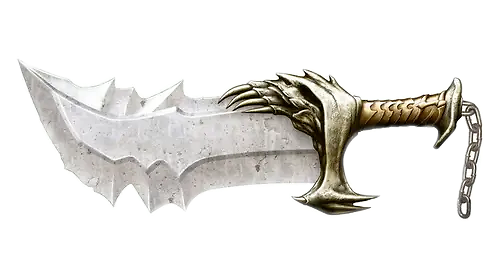
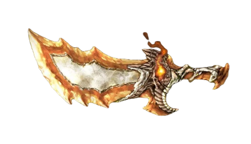
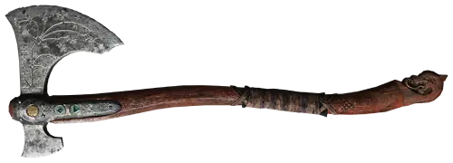

Armas
Espadas del Caos
Son un par de cuchillas curvas unidas por cadenas a los antebrazos de Kratos, dándole la capacidad de arrojarlas a gran distancia y regresarlas a su mano. Desprenden brillos amarillos o rojos cuando se utilizan. La empuñadura tiene el diseño de una calavera y el diseño de las hojas cambia a medida que el jugador las sube de nivel. Además de poderse usar en batalla, las armas demuestran ser útiles para desplazarse y escalar, incluso como escudo.
Espadas de Atenea
Son ligeramente más cortas que las Espadas del Caos, están hechas de oro a diferencia de las Espadas del Caos que eran de hierro, son más anchas en la punta que en la empuñadura, tienen un gancho en el borde superior, lo que le da la habilidad de usarlas como arpones; la empuñadura tiene una doble vista, la de un águila si se mira desde abajo y una calavera desde arriba.
Hacha Leviatan
El hacha fue forjada usando los gritos helados de troles gélidos, dándole la capacidad de lanzar ataques de hielo capaces de congelar incluso cosas no corpóreas. El Pomo del arma es sustituible y cada uno le concede cualidades adicionales distintas, lo mismo ocurre con las runas que se pueden imbuir en ella. Entre otras capacidades del arma se resalta la capacidad de "llamarla" para que regrese a la mano
